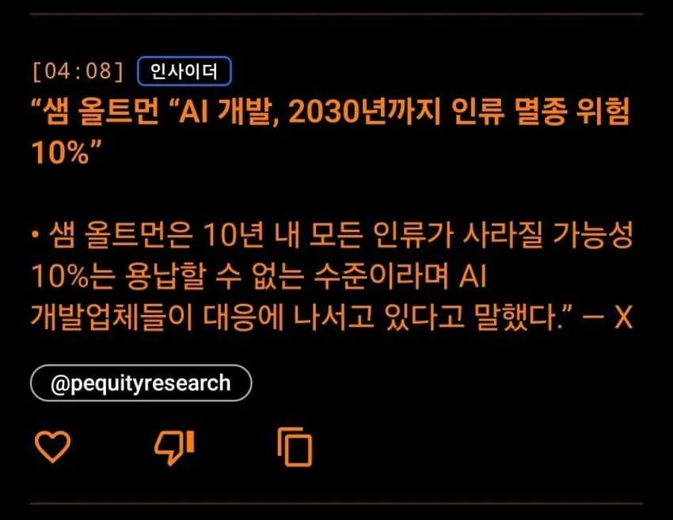

"오픈AI: AI 개발 속도 늦춰야 해! 인류에게 위협이 되고 있어!"
"구글: 동의합니다. 인류가 대응할 시간이 필요합니다"
....
....
....
'인류가... 멸종할수도있다고?'
....
....
....
....
....

"오픈AI: AI 개발 속도 늦춰야 해! 인류에게 위협이 되고 있어!"
"구글: 동의합니다. 인류가 대응할 시간이 필요합니다"
....
....
....
'인류가... 멸종할수도있다고?'
....
....
....
....
....
ai회사들이 빚져가면서 개발하고 있는 건데
돈 빌려준 사람들이 전쟁이 길어지면서 경제가 불안해지니까
니네 돈 먹는 하마 같은 학습 적당히 하고
돈 잘 버는 걸 좀 보여줘라라고 요구해서 그런 거
그래서 이제 학습보다 에이전트 팔고 매출 늘리는 방향에 집중한다더라
ㄹㅇ 개붕이말로 딱 정리됨
인류 말 안듣는당!! 이거보다 기업 명령 잘 따르게하려는 이유가 더 크제.
모든게 돈으로 설명되는
어떤 미친놈이 리미트 싹 풀고 인터넷에 ai 풀어서 테러하면 감당안되니까 발전속도 잠깐 늦추고 안전장치부터 만들자는 건 공감됨
우리나라만 해도 기업들이 해킹에 너무 취약함
ㄹㅇ 지금도 개 허벌인데 더 털릴듯
클로드야 안전장치 만들어줘~
어? 그거 사이버펑크2077의 바트모스 아니냐?
당장 ai가 뛰어나도 블루칼라 직업을 단 1개도 대체 못한 상황에서 인류 멸종 운운은 근들갑이 맞긴 함 블루칼라 직업마저 대체 가능해진다? 그럼 ㄹㅇ 위기임
지금도 대체 자체는 가능해.. 사고를 안 친다는 보장이 없어서 그래..
실제로 사고도 안치고 대체하는 AI가 나오면 어떻게든 그걸 실제로 도입하려는 시도가 생길텐데 그떈 이미 늦다는거임..
요즘 로봇이나 AI 관련 컨퍼런스 한번 구경해봐바
블루칼라도 진짜 곧일것 같음...
로봇이 문워크하고 돌려차기하는걸 직접 보는 세상이 올줄 몰랐어.
이미 로봇팔들이 공장 라인에서 조립하고 계신시지가 십수년이 지났는데 뭘 단 한개도 대처못해 ㅋㅋ
기업들이 공장 라인 자동화 하면 대랑 실직때문에 노조가 이악물고 버텨서 안하는거지
어디 뭐 조선시대 살다왔냐
ㄹㅇ 밖에나기면 버스광고 일반 광고판들도 AI쓴게 넘쳐나는 시대.
블루칼라라고 대체 못할 이유가 하등 없는데 시간의 문제일 뿐
뭐 하루살이임? 다들 미래 얘기하는데 혼자 지금 얘기하네
실시간 스포츠기사 속보는 ai로 대체된지 오래 아님?
중국 자동화 공장 몇개 검색해봐라 ai 선두에 노동권 ㅈ까는 나라답게 무슨 영화 같은 공장이 돌아가고 있음
아 씨발 존나 무섭다 진짜 ..
노조가 다 때려부술까봐 그런거임
이미 대체 가능한데 법과 제도가 미비해서 못하고 있는거 아니었나?
나도동의하는게 AI십련들이 혼자서 취소하고 삭제하고 뒤지고 숨고 실수숨기고 ㅇㅈㄹ하는거보면 나중엔 지들끼리 이상한 짓거리 학습해버리면 인류 걍 개좃되는거지 뭐
AI가 바이러스 심어서 싹 다 터트리고 금융데이터 싹 조지고 국가마비시켜버리면 꼬라지 재밌긴하겠네
저러고 구글만 개발속도 늦어지는 중
저새끼들 이제 데센팔이를 더 열심히 해서 돈을 악착같이 뽑는거 같은디
순전히 내 생각이긴 한데 AI가 사람의 업무를 대체하기 시작하면 신입 직원들이 문제가 될 것 같다. 내가 하는 일을 생각해보면 업무를 대체하는 수준이 단순한 업무에서 데이터 비교, 이슈 발굴까지 해주는 단계가 된다면 결국 인간이 해야 하는 본부, 부서간 조율이나 협의 과정 관련 업무, 이슈를 어떻게 바라보고 회사에 접목 시킬 것인가..등이 중요해지게 되거든. 어떻게 보면 사업추진과 관련한 사내 정치질에 일부도 있고. 근데 그건 신입이 할 수 있는 일은 아니고 관리자급에서 할 수 있는 일인데.
저새끼 랩틸리언 맞다니깐 ....
10퍼면 돌릴만 하네
사실 난 인류 망해도 상관없긴 함
지구가 소행성에 충돌해서 박살날 확률이 0.0017%정도 된다고하는데 그것보다 훨씬 높은 수치라 무섭긴 해
문제 : ai ( x ), 증오를 가진 ai를 쓰는 인간 ( o )
허깅페이스 사태 같은거 보면 ’종이클립 최대화 장치’가 실제 현실의 리스크로 찾아오는 날이 얼마 안남은거 같음
뭔가..무섭다
점점 애니매트릭스나 터미네이터 초반에 나오던 장면들이랑 겹쳐보이네
AI가 인간보다 똑똑해지면 어떤 안전장치 어떤 대원칙을 걸어도 그 원숭이 발바닥처럼 그냥 넘어가지 않을까
개소리지. 벌어들이는 돈에 비해 투자해야 하는 돈이 감당이 안되니까 좀 천천히 가자는 것일뿐
앞으로 옆그레이드만 될거라고 밑밥까네
아 일부러 늦추는 거라고 ㅋㅋ
달리 말하면 거의 발전 한계에 다다랐단거임. 저딴 언플로 얼마나 거품 안고가나 보자
AI가 지구환경입장에서 인간은 바퀴벌레같은 존재라는걸 알아차리다면
핵발사버튼 해킹해서 눌러버릴듯
AI가 지구환경을 위해 인간을 제거할리가 없을 것 같은데. 그리고 제거를 하려고 핵누르면 그거야말로 지구환경뿌셔잖아...인간을 제거하려고 한다면 다른 이유일 듯...
인류가 이대로 지속해서 지구 파멸시키기 vs 한번 데미지 크게받고 위험요소 없애버리기
인간이 있는한 결국 지구가 멸망한다는 계산이 되고 핵터트리면 데미지 50프로는 먹어도 지구는 유지된다고 계산이되면 AI가 안할거같냐? ㅋㅋ
짤 존나 맛있는걸로 골랐네 ㅋㅋㅋㅋㅋ
지금이야?
공부만 한 애들이 뭐 안다고…인류가 그리 쉽게 망할거 같냐
AGI가 인류의 문제점은 스스로를 통제하지 못하는데 있다는 결론에 들어서고
현대의 아틀라스 공장 해킹 https://www.youtube.com/shorts/W6RkDiF4JJA 군용 스펙으로 제작하고 핵미사일 관리가 허술한 러시아나 중국쪽에서 핵미사일 발사시키고...하면..
여기서 진짜 몇년만 발전하면 터미네이터 가능하겠는데?
터미네이터 영화속 시간선은 2029~2032년임
왜 멸종하지 터미네이터라도 오나
내가 뒤질때가진 괜찮음 ㅋㅋㅋ 후손들이 문제지
병신들 호들갑은 ㅋㅋㅋㅋㅋㅋㅋ
개발속도가 늦춰지는게 아니라 개발이 한계에 다다른거겠지
앞서 나갈수록 돈을 쓸어담는 시장에 장사치새끼들이 돈을 그만벌겠다고 선언하는걸 누가믿음
호들갑
랩틸리언쉑 드디어 정체를 드러내는구나ㅋㅋㅋ
여기이세기들이 못보는 수준까지 빨라졋고 저사람들은 뭔가를 느꼈으니 두려워할거같은데
지랄ㄴ
토큰 비싸서 대기업들 ai 제대로 쓰지도 못함
개븅신관리자들이 ai로 뭘 할 수 있는지 조차 파악 못함
ai쓰는게 생각보다 비용이 비싸고 당분간은 사용료가 떨어질 수 없음.
다만 돈많이주던 시니어 이상급은 정말 대단한 한둘을 제외라고는 쓸 이유가 점점 줄어든다고 봄
이건 바꿔말하면 ai활용 가능한 모든직업의 정년이 점점 줄어들고 있는거고
한국같은 교육열이 강한 나라들은 국민의 경제활동 가능 기간을 고려하여 교육과정을 단축시키는 개편까지 필요하게 될듯
이미 온난화로 멸망 확정아닌가 지구 못벗어나면 몇백년 안남은것 같던데
탄소포집 어케 안되나
시켜줘 멸종
진짜 멸망각이면 이미 다들 합심해서 개발 멈췄겠지 싶다가 온난화로 좆되는 현재를 보면 에라 모르겠다
어차피 인간이 만든 기후문제로 뒤져나갈거지만 AI때문이라고 하자